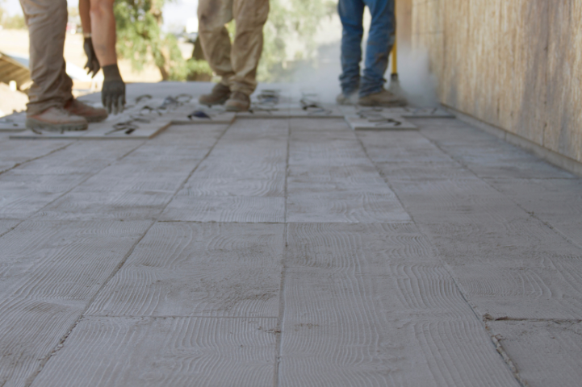

Luxury Stone & Wood Aesthetics Without Paver Maintenance
Homeowners in Melbourne, VIC love the visual warmth of natural stone, brick walkways, and timber decks—but hate the constant weeding, shifting pavers, and wood rot that come with them. Stamped concrete solves that problem completely. By texturing and coloring freshly poured, steel-reinforced concrete, Clacy Concrete creates a monolithic surface that looks like hand-laid stone while staying level, weed-free, and remarkably durable.
From backyard entertainment patios and front entry walkways to pool decks and decorative driveway aprons, our decorative concrete artisans bring precision timing, crisp stamp alignment, and multi-tone color depth to every pour.

Popular Stamped Concrete Patterns & Colors
During your free design consultation in Melbourne, we bring physical color charts and discuss pattern options that pair naturally with your home's siding, brick, or stone facade:
- Ashlar Cut Slate: Clean geometric stone tiles with subtle chiseled slate texture—our most requested pattern for modern patios.
- Random Flagstone: Organic, irregular stone shapes that blend effortlessly into landscaped gardens and pool surrounds.
- Cobblestone & Running-Bond Brick: Classic European texture ideal for curved front walkways, driveway borders, and porch steps.
- Weathered Wood Plank: Realistic timber grain and knots without staining, warping, or termite risk.
- Seamless Slate Skins: Subtle natural rock texture without deep grout lines—great for dining tables and patio chairs.
Our 5-Stage Stamped Concrete Craftsmanship
Stamped concrete is an art that leaves zero room for guesswork. Timing, concrete mix consistency, and release agent application determine whether a slab looks cheap or truly architectural:
- Sub-Base & Rebar Foundation: Every stamped slab sits on compacted crushed stone with welded wire mesh or steel rebar reinforcement.
- Integral Color Mixing: Pigment is batched directly into the ready-mix truck so color runs all the way through the slab—not just on the surface.
- Contrast Release Agent: A secondary accent color is applied before stamping to create natural shadow and stone variation in the textured grooves.
- Precision Stamping & Hand Detailing: At the exact window of concrete plasticity, our crew stamps interlocking mats and hand-chisels edges and tight corners.
- Washing, Control Cuts & High-Performance Sealer: After curing and pressure washing excess release, we cut discreet control joints and apply two coats of UV-stable acrylic sealer (with optional non-slip grit additive for pool decks).
Caring for Your Stamped Concrete
To keep your stamped concrete patio or walkway in Melbourne looking rich and vibrant, simply rinse away leaves and dirt periodically and schedule a fresh coat of breathable concrete sealer every 2 to 3 years. Resealing locks out moisture, prevents freeze-thaw scaling, and restores that crisp satin sheen. Avoid using metal snow shovels or harsh de-icing salts on decorative concrete surfaces, as plastic shovels and plain sand preserve the sealed topcoat.
Ideal Projects for Stamped Concrete in Melbourne, VIC
Because stamped concrete can be poured in sweeping curves, multi-level steps, and custom widths, it adapts to virtually any residential or commercial layout. Popular applications across Melbourne and Gippsland & South East Melbourne include backyard entertaining patios with built-in fire pits, slip-resistant swimming pool decks, welcoming front entry walkways, covered porch slabs, and decorative driveway aprons or borders.
Every stamped concrete project from Clacy Concrete starts with the same structural foundation as our standard flatwork: compacted gravel sub-base, steel rebar or mesh reinforcement, 4,000+ PSI air-entrained concrete, and thoughtfully placed control joints that blend naturally into the stone pattern. That way, your decorative surface delivers both head-turning curb appeal and decades of structural performance.